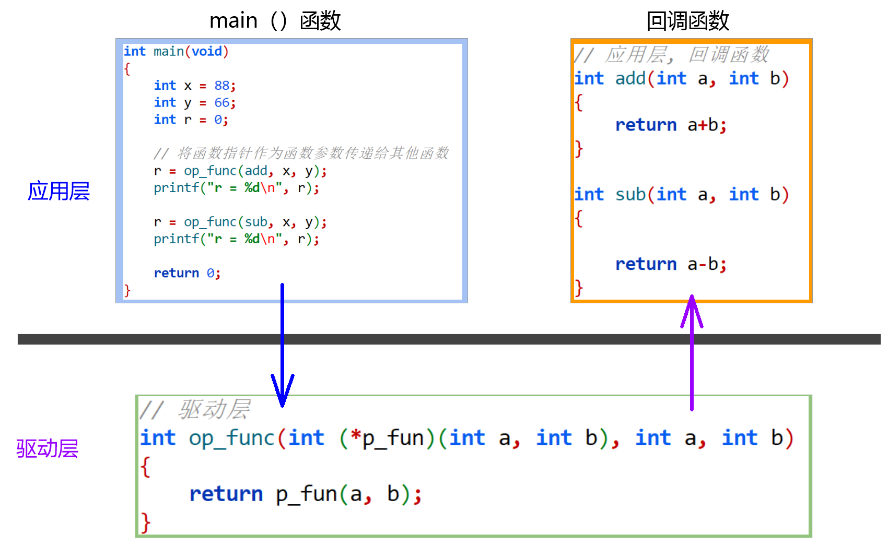

<!DOCTYPE lake>
<h1 data-lake-id="eUiAO" id="eUiAO"><span data-lake-id="u4b7f96a9" id="u4b7f96a9">1&gt; 回调函数</span></h1><span class="yuque-card-unsupported">[codeblock]</span><p data-lake-id="uef9d80e4" id="uef9d80e4"><br/></p><p data-lake-id="ub2966d62" id="ub2966d62"></p><hr/><h1 data-lake-id="li9X6" id="li9X6"><span data-lake-id="udb698763" id="udb698763">2&gt; 函数指针数组</span></h1><span class="yuque-card-unsupported">[codeblock]</span><hr/><p data-lake-id="u329b6953" id="u329b6953"><span data-lake-id="u77fd642f" id="u77fd642f">复杂声明解析</span></p><span class="yuque-card-unsupported">[codeblock]</span><hr/><h1 data-lake-id="NV4Qe" id="NV4Qe"><span data-lake-id="u51de18c9" id="u51de18c9">🐳</span><span data-lake-id="u5b62c645" id="u5b62c645">习题训练：</span></h1><p data-lake-id="u25e7c81a" id="u25e7c81a"><span data-lake-id="u4a550f16" id="u4a550f16">用变量x给出定义：一个有10个指针的数组， 该指针指向一个函数，该函数有一个整型参数并返回一个字符型指针</span></p><span class="yuque-card-unsupported">[codeblock]</span>